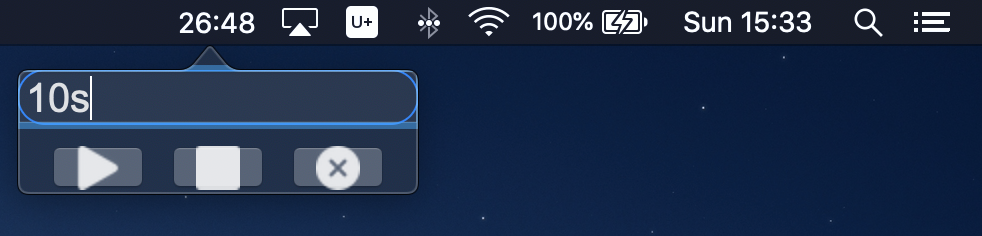

先前都有在使用Mac app來幫我在電腦上倒計時，但有些功能需要付費才可以解鎖，剛好附近有人有在弄Mac app，想說自己來寫一個倒數計時器，在這邊紀錄一下製作的過程。
安裝Xcode
工欲善其事必先利其器，在開始寫app之前，需要先安裝Apple的Xcode，可以直接去App Store裡面下載，只不過要先空下電腦裡面30GB的空間才可以下載，雖然我自己看安裝完成只佔了10GB左右。
創建Project
在前面的部分主要是參考這篇教學來設定好project，並弄出最基本的框架，如果覺得底下的步驟看不太懂的話，建議看看這篇教學。
- 點選File→New→Project
- 選擇
App - 設定project名稱
- Interface選擇
SwiftUI - Language選擇
Swift - 選定project存放的位置以後按下
Create
執行完上面的步驟以後就完成了基本的project設定了，接下來就可以開始著手建造自己的app。
製作Popover
在創建好project以後，Xcode會自動先生成兩個.swift檔，分別是AppDelegate.swift和ContentView.swift，我的理解是，程式執行時，會先執行AppDelegate.swift裡面的applicationDidFinishLaunching()，而在該function裡面會去new ContentView的物件來展示畫面給使用者，可以想成是ContentView.swift是用來刻UI，而AppDelegate.swift用來實作feature。
而在這邊我想要做的是像底下的popover，點選menu bar上面的icon以後，跳出一個視窗讓使用者輸入時間，所以預設的大部分程式碼都可以先刪除。

為了創建popover我們會需要宣告一個NSPopover的物件，一個簡單的例子如下
import Cocoa
import SwiftUI
@NSApplicationMain
class AppDelegate: NSObject, NSApplicationDelegate {
var popover: NSPopover!
func applicationDidFinishLaunching(_ aNotification: Notification) {
// Create the SwiftUI view that provides the window contents.
let contentView = ContentView()
// Create the popover
let popover = NSPopover()
popover.contentSize = NSSize(width: 200, height: 50)
popover.behavior = .transient
popover.contentViewController = NSHostingController(rootView: contentView)
self.popover = popover
}
}
在上面的例子裡面，我們將contentView放進popover裡頭，所以在ContentView.swift裡面刻的UI就會顯示在popover裡面了。
製作Menu Bar Item
在設定好popover該顯示的東西以後，我們還需要將一個按鈕放到Mac的menu bar上面，讓使用者點選這個按鈕以後跳出popover。
import Cocoa
import SwiftUI
@NSApplicationMain
class AppDelegate: NSObject, NSApplicationDelegate {
var popover: NSPopover!
var statusBarItem: NSStatusItem!
func applicationDidFinishLaunching(_ aNotification: Notification) {
// Create the SwiftUI view that provides the window contents.
let contentView = ContentView()
// Create the popover
let popover = NSPopover()
popover.contentSize = NSSize(width: 200, height: 50)
popover.behavior = .transient
popover.contentViewController = NSHostingController(rootView: contentView)
self.popover = popover
// Create the status item
self.statusBarItem = NSStatusBar.system.statusItem(withLength: CGFloat(NSStatusItem.variableLength))
if let button = self.statusBarItem.button {
button.image = NSImage(named: "Icon")
button.action = #selector(togglePopover(_:))
}
}
@objc func togglePopover(_ sender: AnyObject?) {
if let button = self.statusBarItem.button {
if self.popover.isShown {
self.popover.performClose(sender)
} else {
self.popover.show(relativeTo: button.bounds, of: button, preferredEdge: NSRectEdge.minY)
}
}
}
}
在上面的程式碼裡面，我們建立了一個按鈕並設定它被點擊的時候呼叫tooglePopover()這個函式，而在該函式裡面會去顯示/隱藏popover。另外，在創建按鈕的時候有設定它顯示的圖片，設定的方式請參考下面的章節。
引入圖片至Project
- 點選
Assets.xcassets - 在跳出的畫面左下角有個
+的符號 - 設定圖片的名稱，這個名稱需要跟程式碼裡頭的一致
- 在右邊的側欄裡面可以設定圖片的一些屬性，如果是要放在menu bar的圖示的話，可以參考教學裡面的Createing a Menu Bar Icon的設定。
- 將圖片拖曳到Xcode裡面的方框中就完成了
在Dock裡面隱藏App
由於想要做的是menu bar app，不希望程式在執行的時候在dock也出現圖示，這時可以去Info.plist裡面加入Application is agent (UIElement)這個參數並將value設成YES。
至此，一個簡單的popover app就完成了，底下會簡單介紹一下在製作倒數計時器的時候用到的一些東西，如果想看完整的程式碼，可以參考最後完成的成品，或許可以解決部分你遇到的問題。
Swift Timer
我所製作的倒數計時器主要是使用Swift的Timer這個class來完成主要的功能，Timer會根據使用者指定的時間固定去執行設定好的函式，詳細的介紹可以參考這篇教學。
let timer = Timer.scheduledTimer(withTimeInterval: 1.0, repeats: true, block: { timer in
// Your function here
})
在上面的程式碼裡面，我們製作了一個Timer，它每過一秒就會執行大括號裡面的程式碼。
如果想要讓這個Timer停下來，不再每秒執行，只需要呼叫invalidate()即可。
timer?.invalidate()
值得一提的是，Timer一旦被invalidate以後，如果未來還想要它繼續執行的話，就得要重新製作一個Timer，不能重複利用，建議將創建Timer弄成一個function以方便快速的建立。
為App建立Global Shortcut
在Swift裡面好像沒有可以直接設定global shortcut的方法，讓你能在任意視窗按下設定好的快捷鍵就打開你所寫的app，好在網路上有很多大神有做了好用的package，只要加進去project裡面就能簡單做到了，在這裡我所使用的是KeyboardShortcuts這個套件。
Swift Package Manager
將套件加入project的方式還蠻簡單的，點選menu bar的File→Swift Packages→Add Package Dependency…，在跳出的視窗貼上package GitHub repository的網址，最後按下確認就可以了。
KeyboardShortcuts
在引入好KeyboardShortcuts以後，只需要使用下面的程式碼就能設定好global shortcut了。
import KeyboardShortcuts
extension KeyboardShortcuts.Name {
static let toggleUnicornMode = Self("togglePopover", default: .init(.k, modifiers: [.command, .option]))
}
@main
class AppDelegate: NSObject, NSApplicationDelegate {
func applicationDidFinishLaunching(_ aNotification: Notification) {
// Set shortcut action
KeyboardShortcuts.onKeyUp(for: .togglePopover) { [self] in
// Your function here
}
}
}
在extension的部分，我們設定快捷鍵為command+option+k，並觸發togglePopover這個名字的function。
在app運行的時候我們還需要去綁定togglePopover這個名字實際上是去連接到哪一個function，也就是設定KeyboardShortcuts.onKeyUp()的部分。
在App內播放音樂
將音樂引入project
直接從Finder裡面將音檔拖曳到Xcode左邊側欄的檔案列表就行了。
播放音樂
這邊使用Swift內建的套件來達成。
import AVFoundation
// Import sound file
let bundle = Bundle.main
guard let sound = bundle.path(forResource: SOUND_PATH, ofType: SOUND_TYPE) else { return }
do {
print("Found sound file")
let audioPlayer = try AVAudioPlayer(contentsOf: URL(fileURLWithPath: sound))
} catch {
print("Sound file not found")
}
// Play music audioPlayDefaultCount+1 times
audioPlayer.numberOfLoops = audioPlayDefaultCount
audioPlayer.currentTime = 0
audioPlayer.play()
audioPlayer.stop()
在import sound file的部分需要將SOUND_PATH和SOUND_TYPE替換掉，SOUND_PATH就是音檔的名稱，但不包含副檔名，而SOUND_TYPE是音檔的副檔名，像是.wav等。
在使用時可以透過numberOfLoops設定音樂要播幾次，音樂會播你所設定的數字加一次，所以如果只想播一次的話，可以不寫這行或是將數字設成0，如果是負數的話就會不斷循環播放不停止。
在上面的例子裡面有將currentTime設為0，其原因是當我們呼叫stop()以後，下次在呼叫play()時，會從上次停止的地方再開始播放，如果想要從頭播放的話，就需要將currentTime設成0。
傳送通知
如果想要讓app發出系統通知顯示在螢幕的右上角，可以參考底下的程式碼，只需要修改title和informativeText就能決定顯示在通知裡面的文字訊息。
let notification = NSUserNotification()
notification.title = "Time's Up !!!"
notification.informativeText = "Click notification to dismiss"
notification.soundName = NSUserNotificationDefaultSoundName
NSUserNotificationCenter.default.deliver(notification)
如果想要讓使用者點選通知以後觸發某個動作，這時需要一個繼承了NSObject和NSUserNotificationCenterDelegate的class，並override userNotificationCenter這個函式，最後在NSUserNotificationCenter綁定這個class的instance。
class NLUTimer: NSObject, NSUserNotificationCenterDelegate {
func showNotification() {
let notification = NSUserNotification()
notification.title = "Time's Up !!!"
notification.informativeText = "Click notification to dismiss"
notification.soundName = NSUserNotificationDefaultSoundName
notification.hasActionButton = false
NSUserNotificationCenter.default.delegate = self // Binding this instance
NSUserNotificationCenter.default.deliver(notification)
}
func userNotificationCenter(_ center: NSUserNotificationCenter, didActivate notification: NSUserNotification) {
print("Click notification")
// Do what you want here
// Close notification
NSUserNotificationCenter.default.removeAllDeliveredNotifications()
}
}
輸出成.app的格式
在完成了project的所有功能以後，Xcode有提供打包成.app的功能，方便開發者分享給其他使用者。
只需要在Xcode的menu bar點選Product→Archive，在跳出的視窗選擇Distribute App→Copy App，最後選擇輸出的路徑就可以了。